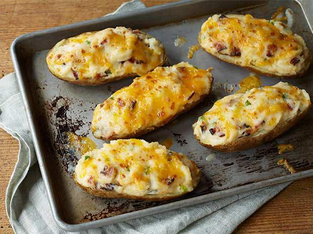
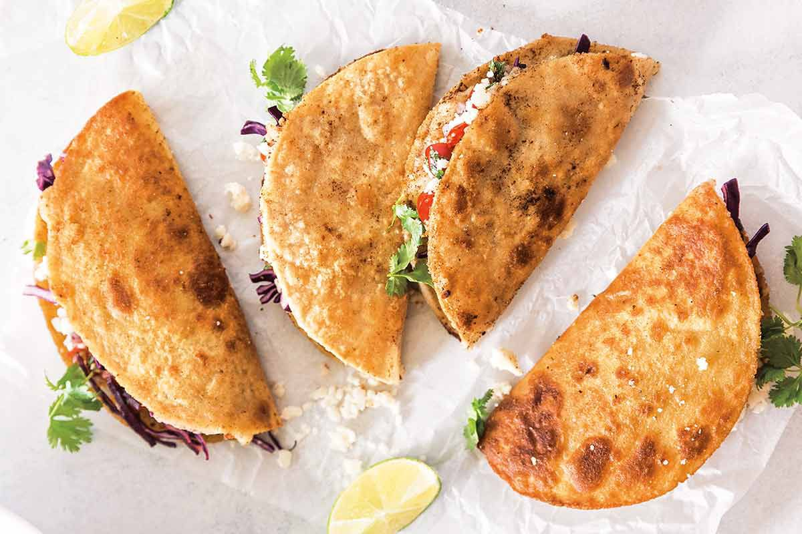

Who doesn't like mashed potatoes? They are the best! Check out this Fancy Mashed Potato recipe!

Potatoes are delicious. They are the fourth most consumed crop in the world.You can make many things with potatoes. If you would like to learn more about poatoes look HERE.
Who doesn't like mashed potatoes? They are the best! Check out this Fancy Mashed Potato recipe!
What could be better than two different types of potatoes mashed into one? Well, three types of potatoes mashed into one... Check out this Twice Baked Potatoes recipe!This one even adds bacon!
One of the best potato uses of all is Potato Tacos!! Here is my families Potato Taco Recipe.
Ingredients 1 pound ground beef 4-6 potatoes Garlic salt Corn tortillas
Brown ground beef in frying pan and set aside. Peel and cut potatoes in quarters. Boil potatoes until soft. Drain all but ¼ cup water from the potatoes. Mash the potatoes with fork. Add potatoes to the browned ground beef and stir. Add about 1 tsp. Garlic salt and stir. Heat about 2 tbs. Of vegetable oil on frying pan to medium high. Add a small amount of the meat and potatoes to a corn tortilla and place on the oiled frying pan. After a few seconds fold the tortilla in half and fry until crispy. Top with your favorite toppings. Enjoy!
